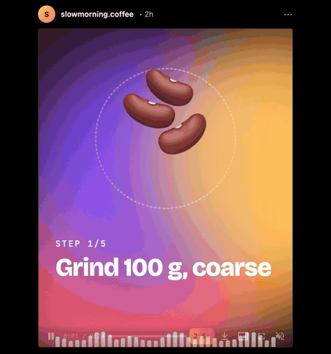
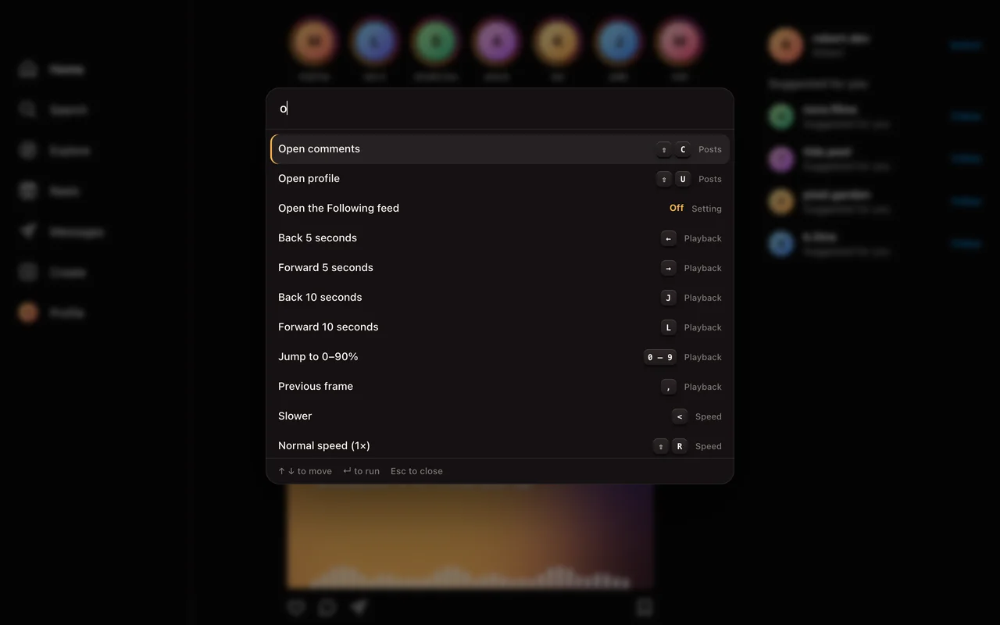
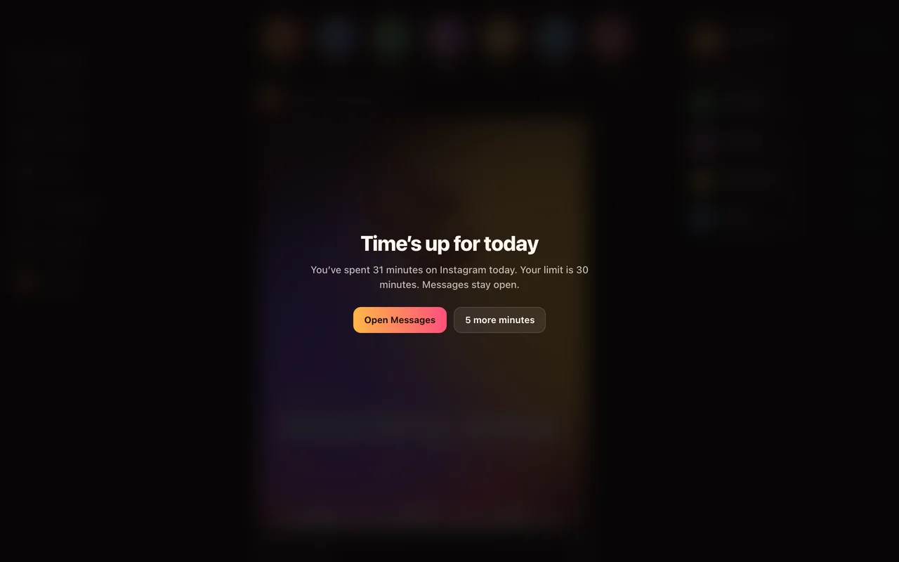
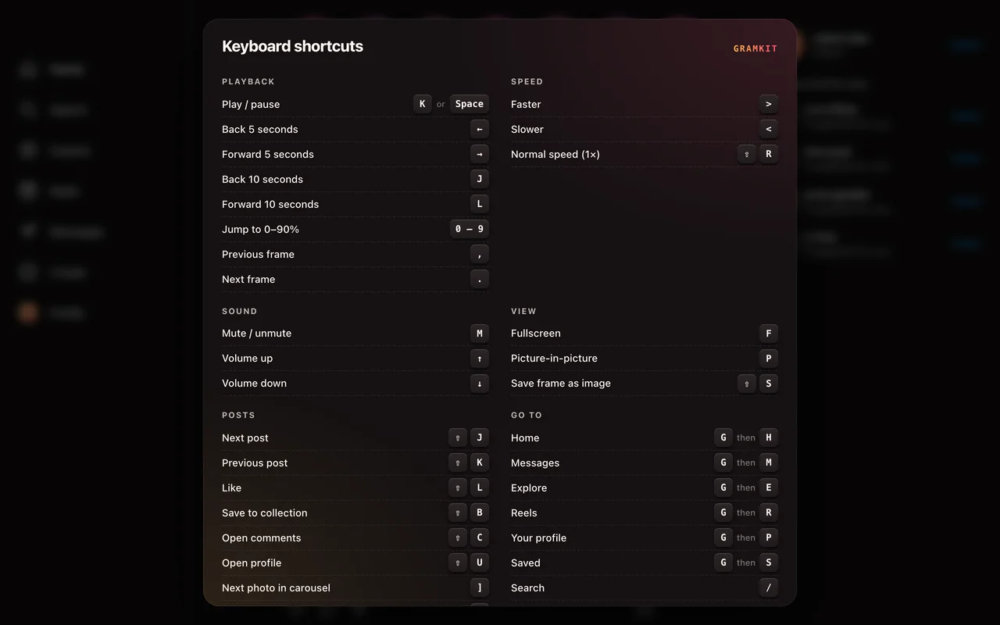
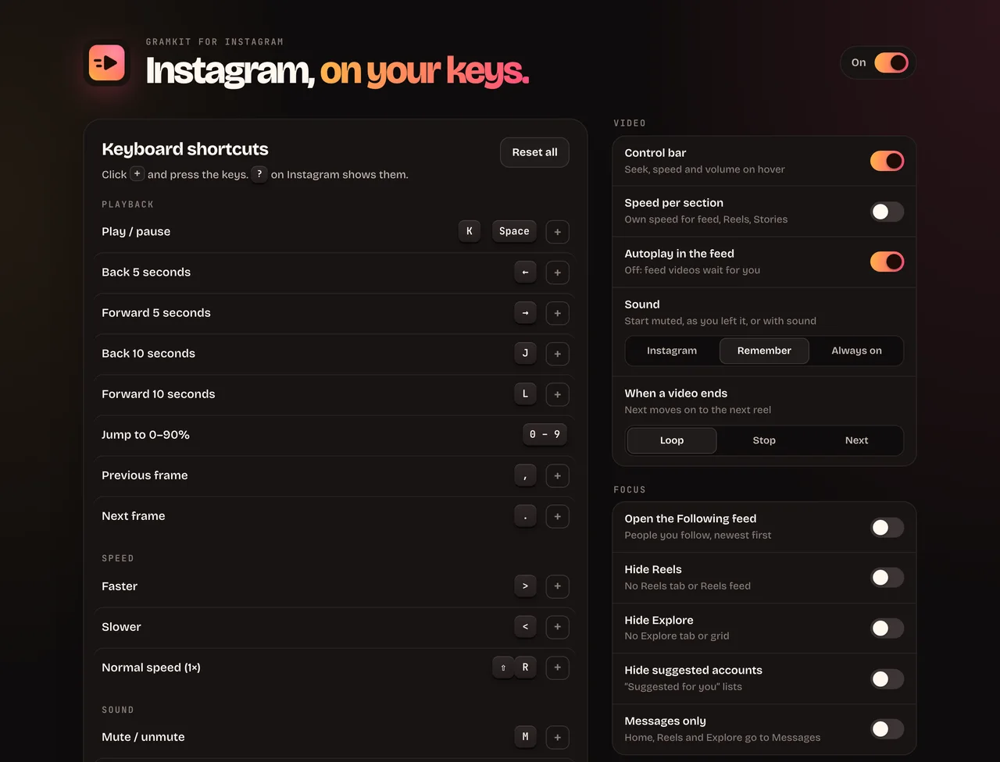

Free extension for Chrome, Firefox and Zen
Instagram finally has a speed button.
And a seek bar, a volume slider, downloads, keyboard shortcuts and a daily limit that actually stops you. For Instagram on the web.
Also Edge, Brave and Arc. No account. No tracking. Open source.

key, then the seek bar being dragged and J and L skipping 10 seconds">Keyboard
YouTube keys. On Instagram.
The shortcuts your hands already know, plus Gmail-style jumps between pages. Every one can be rebound, and none fire while you type a message. Press any of these right here.
- KPlay / pause
- JLBack / forward 10 s
- <>Slower / faster
- 0–9Jump to 0–90%
- MMute
- FPFullscreen / picture-in-picture
- ,.Frame by frame
- ⇧J⇧KNext / previous post
- ⇧L⇧BLike / save
- ⇧DDownload post, reel or story
- GHGo home (also M, E, R, P, S)
- /Search
Command palette
Everything on ⌘K.
Every action, page and setting by name. Speed presets, profiles you opened lately, @name to jump to anyone, and anything else searches Instagram.

Focus
A time limit that actually stops you.
Pick 15 minutes to 2 hours a day. Past it, a full-screen card covers everything except your messages. Time only counts while Instagram is in front.
Or go further: open the Following feed instead of Home, hide Reels and Explore, or switch to Messages only during focus hours.

Shortcuts
Press ? to see them all.
A cheat sheet over the page, any time. Rebind anything in the settings, including two-key sequences like G M.

Settings
Free. No account. No tracking.
Speed presets and switches in the toolbar popup, everything else in a settings page. In English or Brazilian Portuguese.

- Sound that stays putNo more re-muting on every scroll. Your volume level is kept too.
- DownloadsPosts, every slide of a carousel, reels and stories, at the best quality Instagram has.
- Real seek barDrag, preview the time, see what's buffered. Scroll the speed chip to change speed.
- Autoplay offVideos in the feed wait for you. Loop, stop or skip to the next reel when one ends.
- Save a frameStep frame by frame with , and . then save the exact one as a PNG.
- Speed per sectionOne speed for the feed, another for Reels and Stories, if you like.
Privacy
Your feed is your business.
No analytics, no account, no servers of ours. Settings live in your browser. The only requests go to instagram.com, when you ask for a download.